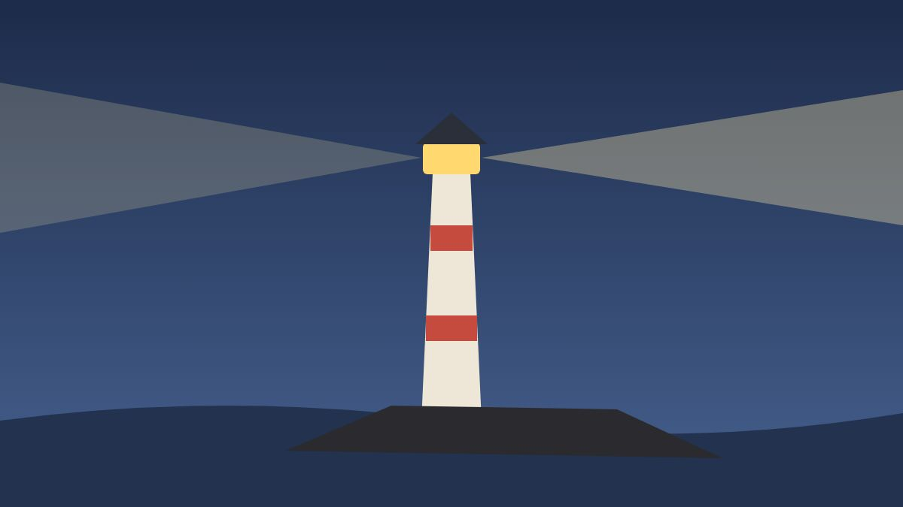

A Short History of the Lighthouse

The first lighthouses were fires. Sailors approaching a strange coast at night looked for a glow on a hill, and towns that wanted their trade kept one burning.
Towers came later, built to lift the flame above the swell so it could be seen from further away. Coal, then candles, then oil lamps with polished reflectors behind them.
The lens
The great leap was a lens made of rings of glass prisms, which bent the light of a single lamp into a narrow, powerful beam. Turned on a bed of mercury, it swept the horizon and gave each light its own rhythm of flashes, so a navigator could tell one headland from the next.
Keepers wound the clockwork every few hours, trimmed the wicks and kept the glass spotless. Their logbooks are full of weather, ships and loneliness.